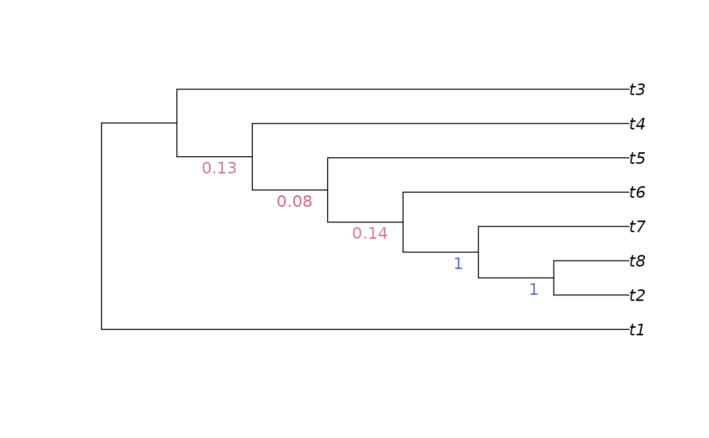

JackLabels() produces a list of node labels denoting split support from
a set of resampled trees, optionally printing them on a tree.
Usage
JackLabels(
tree,
jackTrees,
plot = TRUE,
add = FALSE,
adj = 0,
col = NULL,
frame = "none",
pos = 2L,
showFraction = FALSE,
format = "character",
...
)Arguments
- tree
A tree of class
phylo.- jackTrees
A list or
multiPhyloobject containing trees generated byResample()orJackknife().- plot
Logical specifying whether to plot results; if
FALSE, returns blank labels for nodes near the root that do not correspond to a unique split.- add
Logical specifying whether to add the labels to an existing plot.
- adj, col, frame, pos, ...
Parameters to pass to
nodelabels().- showFraction
Logical specifying whether to also annotate nodes with the fraction of replicates that were decisive for the split.
- format
Character specifying return format.
"character"returns a character string suitable to add to thenode.labelsattribute of a tree; "numeric" returns numeric values suitable for further analysis.
Value
A named vector specifying the proportion of jackknife iterations
consistent with each node in tree, as plotted.
If format = "character", blank entries are included corresponding to nodes
that do not require labels, such that the return value is in the format
required by phylo$node.label.
If multiple trees are specified per iteration, the return value has an
attribute decisive listing, for each entry in the return value, how many
iterations were decisive for that split.
Details
If an element of jackTrees contains multiple trees, then the iteration is
counted as supporting a split if all trees contain the split, and as
contradicting the split if no trees contain it. If a split is only present
in a subset of trees, that iteration is considered not to be decisive, and
is ignored when calculating the support for that split.
See also
Generate trees by jackknife resampling using Resample() for standard
parsimony searches, or Jackknife() for custom search criteria.
Other split support functions:
Jackknife(),
MaximizeParsimony(),
MostContradictedFreq(),
PresCont(),
SiteConcordance
Examples
library("TreeTools", quietly = TRUE) # for as.phylo
# jackTrees will usually be generated with Jackknife() or Resample(),
# but for simplicity:
jackTrees <- as.phylo(1:100, 8)
tree <- as.phylo(0, 8)
JackLabels(tree, jackTrees)

#> [1] "" "" "0.13" "0.08" "0.14" "1" "1"
tree$node.label <- JackLabels(tree, jackTrees, plot = FALSE)
# Write the labelled tree to screen
ape::write.tree(tree)
#> [1] "(t1,((((((t2,t8)1,t7)1,t6)0.14,t5)0.08,t4)0.13,t3));"
# Write labelled trees to a nexus file:
# write.nexus(tree, file = filename)